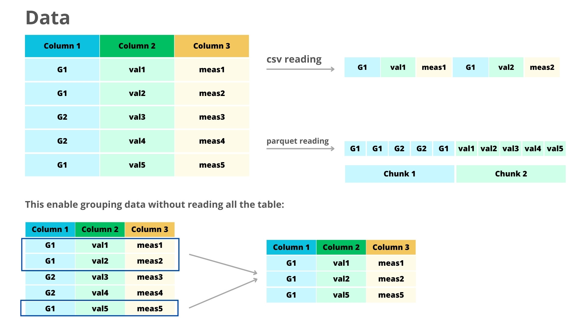

Using the Parquet format with OBIS data
What is Parquet?
Parquet is a lightweight format designed for columnar storage. Its main difference when compared to other formats like csv is that Parquet is column-oriented (while csv is row-oriented). This means that Parquet is much more efficient for data accessing.To illustrate, consider the scenario of extracting data from a specific column in a CSV file. This operation entails reading through all rows across all columns. In contrast, Parquet enables selective access solely to the required column, minimizing unnecessary data retrieval. Also very important: Parquet files are several times lighter than csv files, improving storage and sharing of data. You can learn more about Parquet here.

The Arrow package enable to work with Parquet files (as well some other interesting formats) within R. You can read the full documentation of the package here.
We will now see how you can use Parquet in your data analysis workflow. Note that the real advantage of Parquet comes when working with large datasets, specially those that you can’t load into memory.
Reading and writing Parquet files
Opening a Parquet file is similar to opening a csv, and is done through the function read_parquet. We will start working with a small dataset containing records from OBIS for a fiddler crab species (Leptuca thayeri) which you can download here.
library(arrow) # To open the parquet files
library(dplyr) # For data manipulation
species <- read_parquet("leptuca_thayeri.parquet")
head(species)
## # A tibble: 6 × 127
## basisOfRecord class continent country countryCode county datasetName
## <chr> <chr> <chr> <chr> <chr> <chr> <chr>
## 1 HumanObservation Malacostra… América … Colomb… CO San A… Epifauna m…
## 2 HumanObservation Malacostra… América … Colomb… CO San A… Epifauna m…
## 3 PreservedSpecimen Malacostra… <NA> Brazil <NA> Paran… <NA>
## 4 HumanObservation Malacostra… América … Colomb… CO San A… Epifauna m…
## 5 HumanObservation Malacostra… América … Colomb… CO San A… Epifauna m…
## 6 HumanObservation Malacostra… América … Colomb… CO San A… Epifauna m…
## # ℹ 120 more variables: dateIdentified <chr>, day <chr>, decimalLatitude <dbl>,
## # decimalLongitude <dbl>, establishmentMeans <chr>, eventDate <chr>,
## # eventID <chr>, family <chr>, genus <chr>, geodeticDatum <chr>,
## # georeferenceVerificationStatus <chr>, georeferencedBy <chr>,
## # georeferencedDate <chr>, habitat <chr>, higherClassification <chr>,
## # identifiedBy <chr>, identifiedByID <chr>, institutionCode <chr>,
## # institutionID <chr>, kingdom <chr>, language <chr>, locality <chr>, …As you can see, the returned object is a tibble and you can work with it as any other regular data frame. So, for example, to get all records from Brazil, we can simply use this:
species_br <- species %>%
filter(country == "Brazil")
head(species_br, 2)
## # A tibble: 2 × 127
## basisOfRecord class continent country countryCode county datasetName
## <chr> <chr> <chr> <chr> <chr> <chr> <chr>
## 1 PreservedSpecimen Malacostra… <NA> Brazil <NA> Paran… <NA>
## 2 PreservedSpecimen Malacostra… <NA> Brazil <NA> Mucuri <NA>
## # ℹ 120 more variables: dateIdentified <chr>, day <chr>, decimalLatitude <dbl>,
## # decimalLongitude <dbl>, establishmentMeans <chr>, eventDate <chr>,
## # eventID <chr>, family <chr>, genus <chr>, geodeticDatum <chr>,
## # georeferenceVerificationStatus <chr>, georeferencedBy <chr>,
## # georeferencedDate <chr>, habitat <chr>, higherClassification <chr>,
## # identifiedBy <chr>, identifiedByID <chr>, institutionCode <chr>,
## # institutionID <chr>, kingdom <chr>, language <chr>, locality <chr>, …Saving a data frame to Parquet is also simple, and is done through the write_parquet function:
write_parquet(species_br, "leptuca_thayeri_br.parquet")Opening larger-than-memory files
While using Parquet files for smaller datasets is also relevant (remember: it’s several times lighter!), the real power of Parquet (and Arrow) is the ability to work with large datasets without the need to load all the data to memory. Suppose you want to get the number of records available on OBIS for each Teleostei species. This would involve loading all the OBIS database in the memory before filtering the data. If you ever tried that, it’s quite probable that your R crashed. However, with Arrow this is a straightforward task.
For this part of the tutorial, we will work with the full export of the OBIS database which you can download here: https://obis.org/data/access/. The file have ~15GB.
obis_file <- "obis_20230726.parquet" # The path to the fileThis time, instead of using read_parquet we will use the function open_dataset. The function will not read all the file into memory, but will instead read a “schema” showing how the file is organized.
obis <- open_dataset(obis_file)If you print the obis object you will see that it is not a data frame, but instead a FileSytemDataset object, showing the columns of the table with their respective data types. So how can we access the data? Arrow support dplyr verbs that enable us to work with the data without loading it. So in our case we can filter the data as usual:
teleostei <- obis %>%
filter(class == "Teleostei") %>%
filter(taxonRank == "Species") %>%
group_by(species) %>%
summarise(records = n()) %>%
collect()
head(teleostei)
## # A tibble: 6 × 2
## species records
## <chr> <int>
## 1 Sebastes maliger 41380
## 2 Pycnochromis acares 8724
## 3 Gymnothorax fimbriatus 857
## 4 Monotaxis grandoculis 10961
## 5 Ctenochaetus flavicauda 1297
## 6 Sargocentron tiere 3687Depending on the filters it may take a few seconds before the data is returned. Note that after all the filters we added collect(), what indicates to Arrow that it should process our request. Several dplyr verbs are available to use with Arrow, a full list can be found here.
When working with large datasets, it’s important that your filter produces an object of reasonable size (i.e., that after collect() can be loaded in memory).
If you need to inspect the data before filtering, its possible to load only a slice of the data with slice_head:
obis %>%
select(class, taxonRank, species) %>% # Select just a few columns
slice_head(n = 5) %>% # Select the first 5 lines
collect() # Process the request
## # A tibble: 5 × 3
## class taxonRank species
## <chr> <chr> <chr>
## 1 Teleostei Species Sebastes maliger
## 2 Teleostei Species Pycnochromis acares
## 3 Teleostei Species Pycnochromis acares
## 4 Teleostei Species Pycnochromis acares
## 5 Teleostei Species Gymnothorax fimbriatusLearning more
This tutorial barely scratches the surface of the full potential of working with Parquet. For example, it’s possible to save Parquet datasets in a way that only certain parts of the data need to be read, what can improve even more the computation. The better place to learn more about Arrow is the package website which contain several useful articles - https://arrow.apache.org/docs/dev/r/index.html
You can also see this tutorial on using Parquet with GBIF data: https://data-blog.gbif.org/post/apache-arrow-and-parquet/